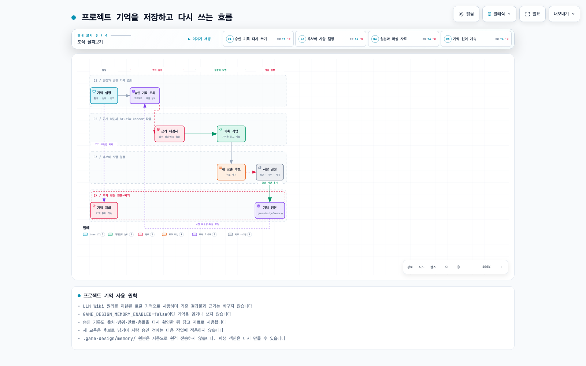

career-evidence-workflow
질문: Career에서 단계 진단과 근거 조사가 증거 프로젝트·포트폴리오·면접·성장으로 어떻게 연결되는가?
유형: workflow · 제품: career

질문: Career에서 단계 진단과 근거 조사가 증거 프로젝트·포트폴리오·면접·성장으로 어떻게 연결되는가?
유형: workflow · 제품: career
질문: Studio에서 비전부터 검토·자산·내보내기와 재개까지 어떤 책임 순서로 진행하는가?
유형: workflow · 제품: studio

질문: LLM Wiki 원리를 적용한 로컬 프로젝트 기억이 설정, 승인 기록 조회, 후보 검토, 원본 보존과 다음 요청의 재사용으로 어떻게 이어지는가?
유형: workflow · 제품: suite
